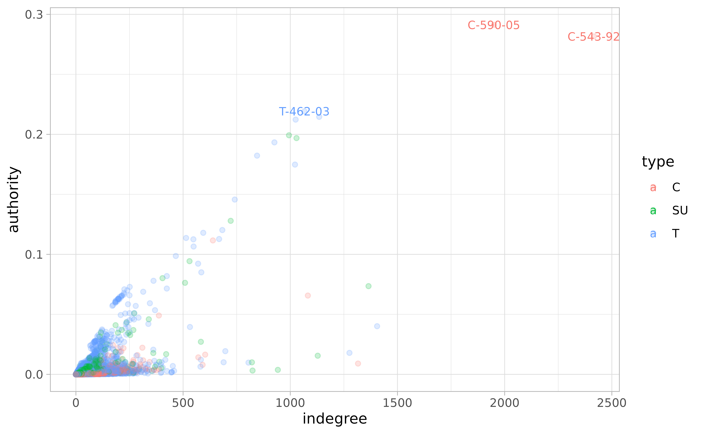
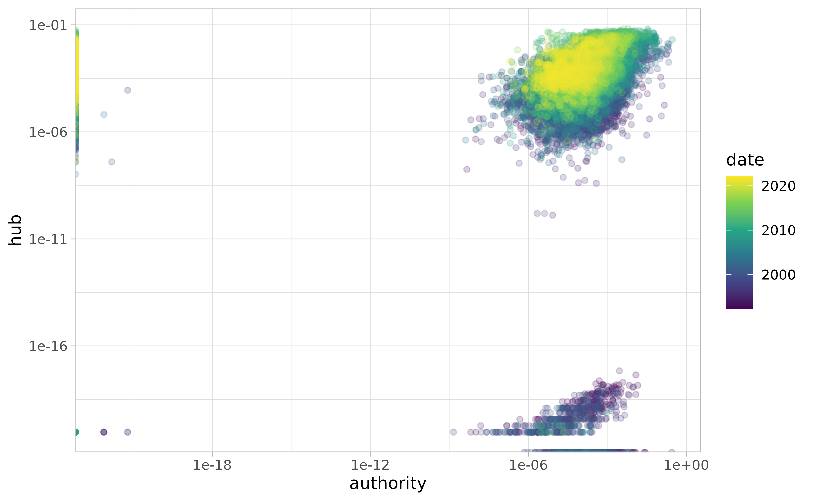

Note. All datasets described here were created using these scripts, which use the functions described in the search article to download the data. See Denny and Spirling (2018) for an in-depth discussion of various pre-processing steps (e.g., removal of stop words, lemmatization, lowercasing).
Thirty Years
Note. All datasets described here were created using these scripts, which use the functions described in the search article.
ccc collects a corpus of over 27,179 rulings made by the
Colombian Constitutional Court (CCC) which cover the period of 30 years
immediately after the first ruling was published on April 3, 1992. All
together, they form a complex citation network with approximately
632,428 ties among them.
Each ruling has a standardized name (e.g., C-776-03,
T-025-04, SU-1184-01). The prefix refers to
the type of ruling; the infix carries no meaning; and the suffix
indicates the year in which the ruling was made.
There are three types of ruling:
Crefers to the cases in which the CCC decides whether a law, rule, administrative decision is compatible with constitutional norms—also known as judicial review.-
Trefers to tutela, which is an individual complaint mechanism (or special writ) aimed at the protection of fundamental rights. These tutelas give ordinary citizens the power to go before any ordinary judge and request the protection of their “fundamental constitutional rights” whenever they perceive them be threatened. Each year, the CCC selects approximately 2% of these cases for review, and the final decision may uphold or reverse decisions made by lower courts.A lot of these cases are related to healthcare access and pensions.
SUrefers to decisions in which the Court has decided to compile severalTcases. They are a sort of legally binding “Annual Reviews” for the judicial system in Colombia.
Citations
metadata contains information on each ruling.
metadata
#> # A tibble: 27,179 × 11
#> id type year date indegree outdegree descriptors mp date_public
#> <chr> <fct> <int> <date> <int> <int> <list> <lis> <date>
#> 1 T-001… T 1992 1992-04-03 187 0 <chr [14]> <chr> NA
#> 2 C-004… C 1992 1992-05-07 118 0 <chr [11]> <chr> NA
#> 3 T-002… T 1992 1992-05-08 272 0 <chr [4]> <chr> 1992-02-08
#> 4 T-003… T 1992 1992-05-11 142 0 <chr [8]> <chr> NA
#> 5 C-005… C 1992 1992-05-11 7 1 <chr [11]> <chr> NA
#> 6 T-006… T 1992 1992-05-12 225 0 <chr [21]> <chr> NA
#> # ℹ 27,173 more rows
#> # ℹ 2 more variables: file <chr>, url <chr>citations contains the citation network in “edge list”
format. Each citation has a weight that refers to the
number of times a ruling cites a previous case.
citations
#> # A tibble: 632,428 × 5
#> from to weight from_date to_date
#> <fct> <fct> <int> <date> <date>
#> 1 C-001-18 C-004-93 1 2018-01-24 1993-01-14
#> 2 C-001-18 C-007-01 1 2018-01-24 2001-01-17
#> 3 C-001-18 C-008-17 2 2018-01-24 2017-01-18
#> 4 C-001-18 C-030-03 1 2018-01-24 2003-01-28
#> 5 C-001-18 C-037-96 3 2018-01-24 1996-02-05
#> 6 C-001-18 C-041-93 1 2018-01-24 1993-02-11
#> # ℹ 632,422 more rowsThere is also a convenient function that turns these two datasets into a squared adjacency matrix.
M <- create_citation_adj_mat()
dim(M)
#> [1] 27179 27179The resulting matrix \(M\) is very sparse. It has 738,698,041 cells and only 0.086% are non-zero.
The following figure is my best attempt at visualizing the whole thing:

Note. If we were to observe an empty column, it would mean that none of the rulings created during that particular time period where cited in future rulings (i.e., rulings that failed to become precedent). If we were to observe an empty row, it would mean that none of the rulings created during that particular time period cited previous rulings. Both of these scenarios are entirely hypothetical.
Time Traveling
A citation network \(\mathbf M\) is always directed, asymmetric, and acyclic—i.e., it points backwards in time.
Let’s assume that \(\mathbf M\) is lower triangular, meaning that all elements above the main diagonal are zero. This happens when the documents are arranged from first to last, the rows represent source documents, and the columns represent target documents. The main diagonal is also zero because we won’t allow any document to cite itself.
Note. The direction of the citation can be considered backwards in time (i.e., documents citing past documents) or forwards in time (i.e., knowledge flowing from documents to future documents). Here I use a backward-looking convention. In acyclic temporal graphs of this sort, the in-degree of the earliest node is always zero and the out-degree of the newest node is also always zero.
However, the CCC matrix is not lower triangular. Some documents cite each other in a way that creates the illusion of time travel because the court has been writing them simultaneously. In some (very few) cases a ruling will cite another one that will be published a couple months later.
Other rulings have been modified many years later for privacy
concerns—e.g., T-1003-99. In such cases the CCC has
modified the original to text to ensure that the names of the parties
involved are rendered anonymous.
These sorts of modifications are usually prefaced by a small editorial note at the beginning of the document.
url <- "https://www.corteconstitucional.gov.co/relatoria/1999/T-1003-99.htm"
txt <- ccc_txt(url)
#> https://www.corteconstitucional.gov.co/relatoria/1999/T-1003-99.htm
txt |>
stringr::str_trunc(width = 300) |>
stringr::str_squish() |>
stringr::str_wrap() |>
cat()
#> NOTA DE RELATORIA: Mediante auto 397 de fecha 19 de julio de 2019, el cual se
#> anexa en la parte final de esta providencia, se ordena suprimir el nombre y los
#> datos que permitan identificar al accionante y, en su lugar, sustituirlos por el
#> nombre ficticio de “Miguel”. Sentencia T-1...This document is also accompanied by a small text—labeled Auto 397/19—which contains citations to future rulings that deal with the issue of anonymity in public documents. There are more examples of this kind of time travel in the CCC dataset.
Thus, the upper triangular section of the \(\mathbf M\) matrix for the Colombian Constitutional Court has various non-zero entries.
Text Features
The docterms dataset contains a data frame with document
identifiers (doc_id) and word counts (lemma
and n). It has 25,403,840 rows.
docterms
#> # A tibble: 25,403,840 × 3
#> doc_id lemma n
#> <fct> <fct> <int>
#> 1 C-001-18 abierto 2
#> 2 C-001-18 abordar 1
#> 3 C-001-18 absoluto 1
#> 4 C-001-18 abstracto 12
#> 5 C-001-18 academia 3
#> 6 C-001-18 academico 1
#> # ℹ 25,403,834 more rowsThis dataset contains 27,179 unique documents with a vocabulary size of 10,794.
The create_dtm() function creates a sparse document-term
matrix from the information contained in docterms.
A <- create_dtm()
dim(A)
#> [1] 27179 10794Close to 91% of the cells in this matrix are empty, which is why we call it a “sparse matrix.”
mean(A == 0L)
#> [1] 0.9134069Here is a random subset of \(\mathbf{A}\):
set.seed(1111)
i <- sample(1:nrow(A), 10)
j <- sample(1:ncol(A), 5)
A[i, j]
#> 10 x 5 sparse Matrix of class "dgCMatrix"
#> abusivo red pertenencia universal edicto
#> T-985-04 . . . . .
#> T-951-03 1 . . 2 .
#> T-073-97 2 . . . .
#> T-304-06 . . . . .
#> T-803-01 . . . . .
#> T-007-06 . . . . .
#> C-283-02 . . . . .
#> T-082-13 . 34 . . .
#> C-015-10 . . . . .
#> T-337-00 . . . . .Note. I am still unsatisfied with the Spanish lemmatization provided by spaCy, so this will probably change in the future if I figure out a better way.
Other Cases
Gender
gender_cases contains cases related to gender equality
across a variety of topics, collected by domain experts here.
gender_cases
#> # A tibble: 471 × 4
#> id type tema href
#> <chr> <fct> <fct> <chr>
#> 1 T-064-23 T A LA IGUALDAD Y LA NO DISCRIMINACIÓN /relatoria/2023/T-064-23.…
#> 2 T-028-23 T A LA IGUALDAD Y LA NO DISCRIMINACIÓN /relatoria/2023/T-028-23.…
#> 3 T-452-22 T A LA IGUALDAD Y LA NO DISCRIMINACIÓN /relatoria/2022/T-452-22.…
#> 4 T-425-22 T A LA IGUALDAD Y LA NO DISCRIMINACIÓN /relatoria/2022/T-425-22.…
#> 5 T-400-22 T A LA IGUALDAD Y LA NO DISCRIMINACIÓN /relatoria/2022/T-400-22.…
#> 6 T-378-22 T A LA IGUALDAD Y LA NO DISCRIMINACIÓN /relatoria/2022/T-378-22.…
#> # ℹ 465 more rowsTransitional Justice
The jctt_* datasets contain cases from the “Justicia
Constitucional en Tiempos de Transición” project, collected by
researchers affiliated with Universidad de Los Andes.
jctt_cases
#> # A tibble: 123 × 11
#> id type date precedent president href keywords crimes mp
#> <chr> <chr> <date> <chr> <chr> <chr> <list> <list> <list>
#> 1 C-019-18 C 2018-04-04 Mantiene Juan Man… /Rel… <tibble> <tibble> <tibble>
#> 2 C-020-18 C 2018-04-04 Mantiene Juan Man… /Rel… <tibble> <tibble> <tibble>
#> 3 C-527-17 C 2017-08-14 Crea Juan Man… /Rel… <tibble> <tibble> <tibble>
#> 4 C-006-17 C 2017-01-18 Mantiene Juan Man… /Rel… <tibble> <tibble> <tibble>
#> 5 C-026-18 C 2018-04-11 Mantiene Juan Man… /Rel… <tibble> <tibble> <tibble>
#> 6 C-535-17 C 2017-08-17 Crea Juan Man… /Rel… <tibble> <tibble> <tibble>
#> # ℹ 117 more rows
#> # ℹ 2 more variables: msv <list>, mav <list>jctt_edge_list contains citation data to sources
“outside” the CCC (e.g., in international law).
jctt_edge_list
#> # A tibble: 1,660 × 7
#> from to type to_source to_system date president
#> <chr> <chr> <chr> <chr> <chr> <date> <chr>
#> 1 C-019-18 ONU, Asamblea General… C Normas i… Sistema … 2018-04-04 Juan Man…
#> 2 C-019-18 ONU, Asamblea General… C Normas i… Sistema … 2018-04-04 Juan Man…
#> 3 C-019-18 ONU, Asamblea General… C Normas i… Sistema … 2018-04-04 Juan Man…
#> 4 C-019-18 ONU, Convencion para … C Normas i… Sistema … 2018-04-04 Juan Man…
#> 5 C-019-18 ONU, Convencion Relat… C Normas i… Sistema … 2018-04-04 Juan Man…
#> 6 C-019-18 ONU, Asamblea General… C Normas i… Sistema … 2018-04-04 Juan Man…
#> # ℹ 1,654 more rowsVisualizations
This section relies heavily on various other packages.
## General Purpose
library(tidyverse)
theme_set(
theme_light(base_family = "Crimson Text") +
theme(strip.background = element_rect(fill = "#4C4C4C"))
)
## Networks
library(igraph)
## Time Series Decomposition
library(tsibble)
library(fable)
library(feasts)Time Series Decomposition
The following graphs show a time series decomposition of the “birth rate” of new rulings per month across time. We do this quite easily by using the tidyverts suite of packages developed by Rob Hyndman and company.
The first thing to do is to create independent year-month values for each case and add them together.
data_stl <- metadata |>
select(id, date, type) |>
mutate(yearmonth = yearmonth(date)) |>
summarise(
n = n(),
.by = c(type, yearmonth)
) |>
tsibble::as_tsibble(key = type, index = yearmonth) |>
tsibble::fill_gaps() |>
replace_na(replace = list(n = 0)) |>
mutate(year = year(yearmonth), month = month(yearmonth, label = TRUE)) |>
## this is where it all happens
model(STL(n ~ trend(window = 21) + season(window = "periodic"))) |>
fabletools::components()
data_stl
#> # A dable: 1,069 x 8 [1M]
#> # Key: type, .model [3]
#> # : n = trend + season_year + remainder
#> type .model yearmonth n trend season_year remainder season_adjust
#> <fct> <chr> <mth> <int> <dbl> <dbl> <dbl> <dbl>
#> 1 C "STL(n ~ tren… 1992 May 3 3.35 4.76 -5.11 -1.76
#> 2 C "STL(n ~ tren… 1992 Jun 4 4.73 -2.46 1.73 6.46
#> 3 C "STL(n ~ tren… 1992 Jul 5 6.12 -1.31 0.198 6.31
#> 4 C "STL(n ~ tren… 1992 Aug 4 7.50 1.70 -5.20 2.30
#> 5 C "STL(n ~ tren… 1992 Sep 6 8.68 -0.0435 -2.63 6.04
#> 6 C "STL(n ~ tren… 1992 Oct 18 9.86 3.41 4.73 14.6
#> # ℹ 1,063 more rowsAfter this it’s just a matter of using the
feasts::autoplot() function.
These plots show cleaner trends in the data and remove some of the noise brought about by seasonal effects (e.g., there are fewer rulings during the month of January).

We can also think about how this work gets distributed over the work week.
d <- metadata |>
count(date) |>
tsibble::as_tsibble(index = date) |>
tsibble::fill_gaps() |>
replace_na(list(n = 0)) |>
mutate(day = wday(date, label = TRUE, week_start = 1)) |>
mutate(year = year(date))
d |>
ggplot(aes(day, n)) +
geom_jitter(alpha = 1/10, width = 1/4) +
stat_summary(fun.data = mean_se, shape = 21, fill = "white", color = "red")
There are big outliers here—e.g., the CCC issued 50 rulings on Thursday June 22, 2000.
And there’s also some heterogeneity across years.
d |>
ggplot(aes(factor(year), n)) +
stat_summary(fun.data = mean_cl_boot,
shape = 21, size = 1/10, linewidth = 1/5, stroke = 1/2) +
facet_wrap(~day, nrow = 1, strip.position = "bottom") +
labs(x = NULL, y = "count") +
geom_hline(yintercept = 0, linetype = "dashed", linewidth = 1/5) +
theme(
axis.text.x = element_blank(),
axis.ticks.x = element_blank(),
strip.background = element_blank(),
strip.text = element_text(color = "black"),
panel.grid.major.x = element_blank()
) +
scale_y_continuous(breaks = seq(0, 20, 2))
#> Warning: Computation failed in `stat_summary()`.
#> Computation failed in `stat_summary()`.
#> Computation failed in `stat_summary()`.
#> Computation failed in `stat_summary()`.
#> Computation failed in `stat_summary()`.
#> Computation failed in `stat_summary()`.
#> Computation failed in `stat_summary()`.
#> Caused by error in `fun.data()`:
#> ! The package "Hmisc" is required.Citations Across Time
The following Figure shows average in-degree (citations) and out-degree (references) made in each ruling across the years. Note that, on average, the decisions written during 1992 tend to be significantly more cited that the ones written in other years, giving them some sort of “first-movers advantage” over the others—i.e., the most innovative thing of any kind is the first of its kind.
metadata |>
pivot_longer(c(indegree, outdegree), names_to = "dtype", values_to = "degree") |>
mutate(dtype = case_when(
dtype == "indegree" ~ "Average Inward Citations (in-degree)",
dtype == "outdegree" ~ "Average Outward Citations (out-degree)"
)) |>
ggplot(aes(year, degree)) +
stat_summary(
fun.data = \(x) mean_cl_boot(x, conf.int = 0.95), size = 1/3,#fatten = 1/2, size = 2,
shape = 21, fill = "white", stroke = 1/2
) +
facet_grid(~dtype, scales = "free_y") +
scale_x_continuous(labels = seq(1992, 2022, 4), breaks = seq(1992, 2022, 4)) +
labs(y = NULL, x = NULL) +
theme(strip.text.y = element_text(angle = 0))
#> Warning: Computation failed in `stat_summary()`.
#> Computation failed in `stat_summary()`.
#> Caused by error in `mean_cl_boot()`:
#> ! The package "Hmisc" is required.
Fowler and Jeon (2008) interpret the panel on the right as evidence that the legal norm of stare decisis, but that’s definitely wishful thinking. Leskovec, Kleinberg, and Faloutsos (2007) show that that out-degree tends to grow over time in many different kinds of networks.
The following Figure disaggregates both kinds of citation by type of ruling.
metadata |>
pivot_longer(c(indegree, outdegree), names_to = "dtype", values_to = "degree") |>
mutate(dtype = case_when(
dtype == "indegree" ~ "Average Inward Citations (in-degree)",
dtype == "outdegree" ~ "Average Outward Citations (out-degree)"
)) |>
ggplot(aes(year, degree)) +
stat_summary(
fun.data = \(x) mean_cl_boot(x, conf.int = 0.68), fatten = 1/2,
shape = 21, fill = "white", size = 1/10
) +
facet_grid(type ~ dtype) +
scale_x_continuous(labels = seq(1992, 2022, 4), breaks = seq(1992, 2022, 4)) +
labs(y = NULL, x = NULL) +
theme(strip.text.y = element_text(angle = 0))
#> Warning: Computation failed in `stat_summary()`.
#> Computation failed in `stat_summary()`.
#> Computation failed in `stat_summary()`.
#> Computation failed in `stat_summary()`.
#> Computation failed in `stat_summary()`.
#> Computation failed in `stat_summary()`.
#> Caused by error in `mean_cl_boot()`:
#> ! The package "Hmisc" is required.Centrality
Instead focusing on in-degree or out-degree, we can follow Fowler and Jeon (2008) in calculating more sophisticated measures of centrality.
The key insight is that we can transform the original (unweighted) citation matrix in two different ways:
-
A co-citation matrix in which any two rulings are connected by the total number of other rulings that cite both. The
cocitation()function inigraphmakes the following calculation:\[ \mathbf C = \mathbf{M}^\top \mathbf{M} \]
-
A bibliographic coupling, in which any two rulings are connected by the number of common references. The
bibcoupling()function inigraphmakes the following calculation:\[ \mathbf{B} = \mathbf{MM}^\top \]
Here, the diagonal elements of \(\mathbf{C}\) correspond to the in-degree for each ruling (or the row sums of \(\mathbf{M}\)); whereas the diagonal elements of \(\mathbf{B}\) correspond to the out-degree for each ruling (or the column sums of \(\mathbf{M}\)).
Following Kleinberg (1999), Fowler and Jeon (2008) calculate authority and score hubs for each ruling. These are the first eigenvectors of the \(\mathbf{C}\) and \(\mathbf{B}\) respectively.
As Breiger (2000) notes: “several stories might be, and are, told about eigenvectors. They are the low-dimensional scaffolds that support higher-dimensional structures.” In this case, the story is supposed to be something like this:
The authority score of a case depends on the number of times it is cited and the quality of the cases that cite it. Symmetrically, the hub score of a case depends on the number of cases it cites and the quality of the cases cited. Thus, authority scores indicate the degree to which a case is thought to be important for resolving other important issues that come before the Court, while hub scores indicate the degree to which a case is well-grounded in previous important rulings.
Fowler and Jeon (2008, 17)
Calculating these scores is pretty straightforward using our data.
Using the igraph package:
net <- igraph::graph_from_data_frame(
## we will use the unweighted edge list
d = citations |> select(!weight),
directed = TRUE,
vertices = metadata |> select(id, type, date, year, indegree, outdegree)
)
V(net)$authority <- igraph::authority_score(net, scale = FALSE)$vector
V(net)$hub <- igraph::hub_score(net, scale = FALSE)$vectorMeasurements of authority are correlated with in-degree measurements, but they’re not the same thing.
igraph::as_data_frame(net, what = "vertices") |>
mutate(top = if_else(rank(-authority) %in% 1:3, name, "")) |>
ggplot(aes(indegree, authority, color = type)) +
geom_point(alpha = 1/5) +
geom_text(aes(label = top), size = 3, family = "Avenir")
The same goes for “hub” and “out-degree” measurements.
igraph::as_data_frame(net, what = "vertices") |>
mutate(top = if_else(rank(-hub) %in% 1:4, name, "")) |>
ggplot(aes(outdegree, hub, color = type)) +
geom_point(alpha = 1/5) +
geom_text(aes(label = top), size = 3, family = "Avenir")Note. It makes sense that SU rulings are heavily represented as “hubs.”
Finally, note that authority and hub scores are somewhat related to each other; however, by definition, the very first rulings can never be hubs and the very last rulings can never be authorities. Hence we see three clusters.
igraph::as_data_frame(net, what = "vertices") |>
ggplot(aes(authority, hub, color = date)) +
geom_point(alpha = 1/5) +
scale_x_log10() + scale_y_log10() + scale_color_viridis_c()
#> Warning in scale_x_log10(): log-10 transformation introduced
#> infinite values.
#> Warning in scale_y_log10(): log-10 transformation introduced
#> infinite values.
Cross-Type Citations
Finally, I will figure out how to visualize cross-type citations eventually. But in the mean time here are four tables: raw counts, proportions, row proportions, and column proportions.
tbl <- citations |>
mutate(
from = str_extract(from, "^[TCSU]+"),
to = str_extract(to, "^[TCSU]+")
) |>
select(from, to) |>
table()
tbl
#> to
#> from C SU T
#> C 133015 1985 18369
#> SU 6082 3710 18562
#> T 45280 27812 377613
prop.table(tbl) |> round(3)
#> to
#> from C SU T
#> C 0.210 0.003 0.029
#> SU 0.010 0.006 0.029
#> T 0.072 0.044 0.597
prop.table(tbl, margin = 1) |> round(3)
#> to
#> from C SU T
#> C 0.867 0.013 0.120
#> SU 0.215 0.131 0.655
#> T 0.100 0.062 0.838
prop.table(tbl, margin = 2) |> round(3)
#> to
#> from C SU T
#> C 0.721 0.059 0.044
#> SU 0.033 0.111 0.045
#> T 0.246 0.830 0.911